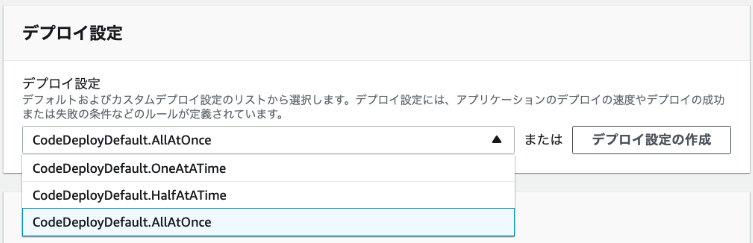
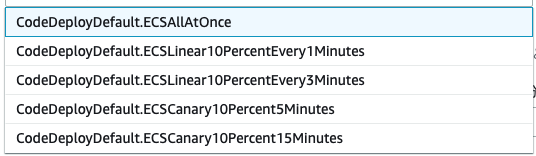

DevOps & CI/CD basics
DevOps = Dev + SysOps
手法
- マイクロサービスアーキテクチャ
- Infrastructure as Code
- CI/CD パイプライン
マイクロサービスアーキテクチャ
- two-pizza teams
- 2つのピザを食べ切れるくらいの規模(6~8 名)にチームとサービスを分解。
- 俊敏性を高めるため。
- APIによる疎結合のサービス連携
CI/CD
Continuous Integration
- コミットと同時に自動でビルド・テストが走る。元来はテスト自動化が動機っぽい。
- Build して artifact が保存されるまで。
- UT 含むが(たぶん)デプロイして実行するインテグレーションテストは含まない。
Continuous Delivery vs. Continuous Deployment
- Continuous Delivery: 人が確認・承認した上でデプロイ
- Continuous Deployment は人手のプロセスがなく自動デプロイされる。

- BB: AWS Code Services: https://d1.awsstatic.com/webinars/jp/pdf/services/20170322_AWS-BlackBelt-CodeCommit-CodeBuild.pdf
- BB: AWS Code Services Part 2: https://d1.awsstatic.com/webinars/jp/pdf/services/20170628_AWS-BlackBelt_CodeSeries_CodeDeploy_and_CodePipeline.pdf
AWS CodeCommit
特徴
- フルマネージドの Git サービス。
- サイズが制限なく、コードは AWS アカウントにプライベート。
- 送信時 (SSH/HTTPS) および保存時 (KMS) の暗号化。
- IAM ロール, CloudWatch, CloudTrail により他の AWS サービスとの連携が容易
- サードパーティーと連携可能
- Ref. https://pages.awscloud.com/rs/112-TZM-766/images/20201020_BlackBelt_AWS_CodeCommit_AWS_CodeArtifact.pdf
使い方
- AWS CLI かコンソールで CodeCommit 上にリモートレポジトリを作る。
- あとの git clone, push, pull などの作業は普通の Git と同じ。
認証方法
- IAM コンソールで認証情報を登録する。

- SSH: キーペアを作り IAM ユーザに公開鍵を登録。
- HTTPS: IAM ユーザの Git 認証情報 (ユーザ名/パスワード) を生成する。
認証情報ヘルパー
- 認証情報ヘルパーを使えば aws-cli 経由でプロファイルに指定したユーザの権限で認証してくれるので、認証情報の登録が不要。
git config --global credential.helper '!aws --profile dev codecommit credential-helper $@'
git config --global credential.UseHttpPath true
- ~/.gitconfig に次のように記載される。
[credential]
helper = !aws --profile dev codecommit credential-helper $@
UseHttpPath = true

- AWSCodeCommitFullAccess, AWSCodeCommitPowerUser, AWSCodeCommitReadOnly などの AWS マネージドポリシーがあるが、これらのポリシーではアカウントの全リポジ トリへのアクセスが許可されてしまう。
- ベストプラクティスは、個々のリポジトリ固有のカスタマーマネージドポリシーを作成すること。
- リソースポリシーはサポートされていない。プリンシパルにマネージドポリシーをアタッチし、Resource セクションに リポジトリのARN を指定する。
master ブランチへの push や merge を拒否するポリシーの例:
https://docs.aws.amazon.com/codecommit/latest/userguide/how-to-conditional-branch.html
{
"Version": "2012-10-17",
"Statement": [
{
"Effect": "Deny",
"Action": [
"codecommit:GitPush",
"codecommit:DeleteBranch",
"codecommit:PutFile",
"codecommit:MergeBranchesByFastForward",
"codecommit:MergeBranchesBySquash",
"codecommit:MergeBranchesByThreeWay",
"codecommit:MergePullRequestByFastForward",
"codecommit:MergePullRequestBySquash",
"codecommit:MergePullRequestByThreeWay"
],
"Resource": "arn:aws:codecommit:*:*:*",
"Condition": {
"StringEqualsIfExists": {
"codecommit:References": [
"refs/heads/main"
]
},
"Null": {
"codecommit:References": "false"
}
}
}
]
}
CodeCommit の暗号化
- デフォルトで AWS 管理キー (AWS managed CMKs) で暗号化される。
外部レポジトリからのマイグレーション
- CodeCommit にリポジトリを作成し、外部リポジトリを一旦ローカルに clone してから CodeCommit リポジトリを remote に設定して push する。
プルリクエスト
- AWS コンソールまたは AWS CLI から作成できる。
- 送信元ブランチのコンテンツを、マージ先ブランチ (送信先ブランチ) と比較する。

- プルリクのマージの承認ルールというのが追加されている。
クライアント側フック
- リポジトリの .git/hooks サブディレクトリにインストールされる。
サーバ側フック
- CodeCommit ではサーバ側のフックは CodeCommit イベントで処理される。
CodeCommit リポジトリトリガー
- コード Push などのリポジトリイベントで SNS, Lambda をトリガーしアクションを実行。

- 関連リソースは CodeCommit と同じリージョンにある必要がある
- https://docs.aws.amazon.com/ja_jp/codecommit/latest/userguide/how-to-notify.html
- Lambda 側からトリガーを追加してもここに反映される:
- https://docs.aws.amazon.com/codecommit/latest/userguide/how-to-notify-lambda.html
通知ルール
- SNS か AWS Chatbot に通知を投げる。

- https://docs.aws.amazon.com/ja_jp/codecommit/latest/userguide/how-to-repository-email.html
- CodeStar Notifications が提供する機能。CodeCommit/CodeBuild/CodePipeline 等のイベントに共通して適用可能。
- 通知ルール作成時、選択イベントに一致する EventBridge ルールが自動生成され、通知先へルーティングされる。
CodeBuild/CodePipeline 連携
- EventBridge ルールを作成してイベントソースを CodeCommit にする。
- コード変更時にビルドをかけるには "CodeCommit Repository State Change" イベント。
- ターゲットを CodeBuild プロジェクトや CodePipeline パイプラインの ARN とする。
- https://docs.aws.amazon.com/ja_jp/codepipeline/latest/userguide/pipelines-trigger-source-repo-changes-cli.html
{
"source": ["aws.codecommit"],
"detail-type": ["CodeCommit Repository State Change"]
}
CloudTrail 連携
- CodeCommit API コールをキャプチャして S3 バケットに保存可能
ブランチ戦略

- メインブランチ、開発ブランチ、Feature ブランチ、リリースブランチ、修正ブランチ等、複数のブランチを使い分けるモデル。
- コミットがあちこちのブランチに散らばるので管理が大変になりがち。
- https://aws.amazon.com/jp/blogs/devops/implementing-gitflow-using-aws-codepipeline-aws-codecommit-aws-codebuild-and-aws-codedeploy/
トランクベース開発

- トランクと呼ばれる 1 つの共有ブランチにコミットの大半をマージする。
- リリース時はリリースブランチを切り、次のリリースまでの短期間使用される。
- ほとんどのコミットはトランクに行われ、リリースブランチにマージされる。
- Amazon では開発者がコミットをトランクに定期的に (理想的には 1 日数回) マージする「トランクベース開発」により継続的インテグレーションを実践するよう強く推奨。
- チームが小さな変更を定期的にマージできる場合、マージの複雑さと労力を最小限に抑えることができる。
- トランクベースの継続的インテグレーション・デリバリーを組み合わせることで、本番環境に変更を加えるまでのリードタイ ムを短縮できる。
AWS CodeBuild
概要
- CI サーバ (Build/Test) のマネージドサービス。
- ソースコード取得
- CodeCommit, S3, GitHub
- ビルド環境
- Docker イメージで用意される。
- ビルドコマンド
- buildspec.yml に記述。
- ビルドコマンド出力はログに送信される。
- アーティファクト
- S3 バケットにアップロード。
ビルドプロジェクト
ソース、ビルド環境、buildspec ファイル名、アーティファクト (出力先 S3 バケット名) 等を指定する。
Ref. https://docs.aws.amazon.com/ja_jp/codebuild/latest/userguide/create-project-console.html
ソース
- ソースプロバイダーの種類
- S3, CodeCommit, GitHub, GitHub Enterprise, Bitbucket

ビルド環境
- ビルドサーバの Docker イメージを指定する。
- マネージド型イメージ
- CodeBuild の Docker イメージレポジトリで管理されたイメージ。
- カスタムイメージ
- Docker Hub, ECR にあるイメージを指定。
-
マネージド型イメージで提供される OS
- Amazon Linux 2, Ubuntu, Windows Server のイメージが提供されている。
- Windows Server は us-east 等、特定リージョンのみ。
- Amazon Linux 2, Ubuntu, Windows Server のイメージが提供されている。
-

- Ref.
- サービスロール
- CodeBuild サービスが各種サービスにアクセスするのに必要なロール。
- CodeCommit ... ソース取得
- S3 ... ソース/アーティファクト入出力
- ECR ... ビルドサーバのカスタムイメージ取得、ビルドしたイメージのプッシュ
- ビルドサーバのコンテナ環境にもサービスロールの権限が引き継がれる (クリデンシャルが環境変数経由で渡される)
- CodeBuild サービスが各種サービスにアクセスするのに必要なロール。
- タイムアウト
- 最長8時間までのタイムアウトを指定できる。
- Lambda で出来ない時間のかかるパフォーマンステスト等を実施できる。
- VPC
- ビルド環境に VPC を指定して VPC 内部のリソースへのアクセスも可能。
- 環境変数
- 環境変数の上書き指定。SSM パラメータストアからの取得も指定可能。

アーティファクト
- 保存先の S3 バケットを指定する。(オプショナル)
- 暗号化
- デフォルト: SSE-KMS の aws/s3 AWS managed CMK を使って暗号化。
- バケットのデフォルト暗号化を SSE-S3 にしていても CodeBuiild 側が SSE-KMS を付与してアップロード。
- カスタム: Customer managed CMK をプロジェクトで設定する。
- デフォルト: SSE-KMS の aws/s3 AWS managed CMK を使って暗号化。
ログ
- オプショナルで CloudWatch Log と S3 バケットにログを保存できる。
- CodeBuild コンソールに出力されるログは環境が終了すると消える。
ビルドキャッシュ
- ビルド環境の特定のパスをキャッシュすることで、ビルドツール・依存モジュールのダウンロードやビルド時間を短縮できる。
- アーティファクトセクションのキャッシュタイプで有効化。

- 対象ファイルは buildspec.yaml の cache セクションで指定。
- S3
- It stores the cache in an Amazon S3 bucket that is available across multiple build hosts.
- This is a good option for small to intermediate sized build artifacts that are more expensive to build than to download.
- This is not the best option for large build artifacts because they can take a long time to transfer over your network, which can affect build performance. It also is not the best option if you use Docker layers.
- Local
- Local caching stores a cache locally on a build host that is available to that build host only.
- This is a good option for intermediate to large build artifacts because the cache is immediately available on the build host.
- Options:
- DockerLayerCache ... コンテナイメージのビルドのためのキャッシュ
- SourceCache ... .git メタデータのキャッシュ
- CustomCache ... buildspec.yaml で指定するキャッシュ
ビルドキャッシュの運用
CodeBuild キャッシュの失効・削除
- S3 に保存されたキャッシュを手動で削除して失効させる
- S3 ライフサイクルポリシーでキャッシュ失効（有効期限・削除ルール）を自動化
プロジェクト側での無効化・上書き
- プロジェクト設定を更新してキャッシュ動作を上書き
- InvalidateProjectCache API でキャッシュを無効化
- 既存キャッシュの実体は削除されない（実行中ビルドとの不整合回避のため）
- 以降のビルドで新しいキーが使われ、古いキャッシュは参照されない
キャッシュ対象の指針
- キャッシュはビルド環境の任意フォルダに有効化できるが、頻繁に変化しない依存関係・ファイルに限定する
- 予期しない動作を避けるため、設定ファイルや機密情報はキャッシュしない
Ref.
- https://docs.aws.amazon.com/codebuild/latest/userguide/build-caching.html
- https://aws.amazon.com/jp/blogs/devops/how-to-enable-caching-for-aws-codebuild/
BuildSpec (buildspec.yml)
- ソースの root ディレクトリに配置。(ビルドプロジェクトで異なるパスも指定可能)
- 各ビルドフェーズのコマンド、アーティファクトとして保存するファイルを指定。

phases セクション
- install フェーズ
- runtime-versions でビルドランタイムのインストール指定。

- dotnet, java, golang, php, nodejs, python, ruby をサポート。
- command ブロックで install フェーズでもコマンド実行可能。
- post_build フェーズ
- UT やコンテナのプッシュ等を実施。
- run-as: Linux-user-name
- 全体および各フェーズに指定可能。
- finally ブロック
- 各セクションに指定。command ブロックでエラーがあったときも必ず実行される。
artifacts セクション
- artifact として S3 に保存するファイルを指定。
- **/* のようなワイルドカードも使える。
env セクション
- 環境変数設定。パラメータストアからも簡単に取得できる。
env:
variables:
JAVA_HOME: "/usr/lib/jvm/java-8-openjdk-amd64"
parameter-store:
LOGIN_PASSWORD: /CodeBuild/dockerLoginPassword
- pre-define の環境変数も大量にある。
Docker イメージをビルドする buidspec.yaml 例:
- docker login でレポジトリにログイン。
- buidspec.yaml と同じディレクトリの (暗黙に選択される) Dockerfile で docker build を実行。
- post_build で ECR に push する。artifacts セクション不要。
- サービスロールに ECR アクセスの権限が必要。
version: 0.2
phases:
pre_build:
commands:
- echo Logging in to Amazon ECR...
- aws --version
- REPOSITORY_URI=041845206805.dkr.ecr.us-west-2.amazonaws.com/gold-repo
- aws ecr get-login-password --region $AWS_DEFAULT_REGION | docker login --username AWS --password-stdin $REPOSITORY_URI
- COMMIT_HASH=$(echo $CODEBUILD_RESOLVED_SOURCE_VERSION | cut -c 1-7)
- IMAGE_TAG=${COMMIT_HASH:=latest}
build:
commands:
- echo Build started on `date`
- echo Building the Docker image...
- docker build -t $REPOSITORY_URI:latest .
- docker tag $REPOSITORY_URI:latest $REPOSITORY_URI:$IMAGE_TAG
post_build:
commands:
- echo Build completed on `date`
- echo Pushing the Docker images...
- docker push $REPOSITORY_URI:latest
- docker push $REPOSITORY_URI:$IMAGE_TAG
Ref.
- https://docs.aws.amazon.com/codebuild/latest/userguide/build-spec-ref.html#build-spec-ref-syntax
- https://docs.aws.amazon.com/codebuild/latest/userguide/use-case-based-samples.html
ビルドの保護
AWS 管理ポリシー
- AWSCodeBuildAdminAccess – CodeBuild へのフルアクセスを提供。
- AWSCodeBuildDeveloperAccess – CodeBuild へのアクセスを提供するがビルドプロジェクトの管理は許可しない。
- AWSCodeBuildReadOnlyAccess – CodeBuild への読み取り専用アクセス。
- AmazonS3ReadOnlyAccess – ビルド出力アーティファクト (S3) へのアクセス。
IAM ロールでビルドアクションを制御する例
{
"Version": "2012-10-17",
"Statement": [
{
"Effect": "Allow",
"Action": "codebuild:CreateProject",
"Resource": "arn:aws:codebuild:us-east-1:123456789012:project/*"
},
{
"Effect": "Allow",
"Action": "iam:PassRole",
"Resource": "arn:aws:iam:123456789012:role/CodeBuildServiceRole"
}
]
}
CodePipeline 連携
- CodePipeline の Build アクションまたは Test アクションに連携サービスとして追加可能
- CodeBuild を CI サーバとして利用
EventBridge による連携
- CodeBuild プロジェクトをターゲットにしてビルド開始
- CodeBuild をイベントソースにして Lambda 等と連携
- CodeBuild Stage Change ... IN_PROGRESS, SUCCEEDED, FAILED, STOPPED
- CodeBuild Phase Change ... BuildSpec に出てくる各フェーズの遷移
例: Validating AWS CodeCommit Pull Requests with AWS CodeBuild and AWS Lambda
- PR を契機に CodeBuild でコードの自動テストを行い、結果を PR にコメント付与する例
- CodeCommit をイベントソースとして CodeBuild を開始、CodeBuild をイベントソースとして Lambda で結果を通知。
- Lambda はテスト開始時とテスト結果を PR にコメント追加するのに使用されている。
- (ClaudWatch Event → EventBridge で読み替え)
- https://aws.amazon.com/jp/blogs/devops/validating-aws-codecommit-pull-requests-with-aws-codebuild-and-aws-lambda/
AWS CodeDeploy

- リビジョン(=アーティファクト)取得元
- S3, GitHub のいずれか。
- S3 の場合はデプロイ先 EC2 インスタンスのロールに S3 へのアクセス許可も必要。
- アーティファクトを各インスタンスのエージェントが pull するため
- デプロイ先
- EC2/オンプレサーバ (要 CodeDeploy エージェント)
- インスタンスはデプロイグループ（例: dev / test / prod）ごとにグループ化
- ECS (Fargate)
- Lambda
- NOTE: CodeDeploy 自体はリソースのプロビジョニングは行わない
- EC2/オンプレサーバ (要 CodeDeploy エージェント)
リビジョン
デプロイ対象アプリケーションの(AppSpecを含む)パッケージ(の特定バージョン)をリビジョンと呼ぶ。
CodeDeploy によるデプロイの流れ
- あらかじめアプリケーション (=デプロイ設定) とデプロイグループを作成しておく。
- S3 にソースコードをリビジョンとして push する。(aws deploy push)
- GitHub の場合は aws deploy register-application-revision で repo/commit をリビジョンとして登録
-
デプロイを作成することでデプロイプロセスが開始。(aws deploy create-deployment)
- この際、アプリケーション名・デプロイグループ・リビジョンを指定。
- デプロイタイプ (Blue/Green 等) に応じてデプロイメントがスケジュールされ、各インスタンス内のエージェントがリビジョンを pull して AppSpec に従って展開。

ラボで実行したコマンド例
S3 バケットを作成後、ローカルにあるアプリケーションをリビジョンとして S3 バケットに push:
aws deploy push --application-name CodeDeploy-Demo --source HeartBeat-App --s3-location s3://$bucketName/HeartBeat-App.zip
- ローカルディレクトリのファイルが zip されて S3 にアップロードされる。
- 裏で RegisterApplicationRevision コマンドで S3 のオブジェクトとリビジョンの紐付けを行なっている。
- S3 バケットのバージョニングを有効にしておけば push するごとにバージョンが上がってリビジョンと紐づけられる。
リビジョンをデプロイ:
aws deploy create-deployment --application-name CodeDeploy-Demo --deployment-group-name HeartBeat-Deployment --deployment-config-name CodeDeployDefault.AllAtOnce --description "Initial Deployment" --s3-location bucket=$bucketName,key=HeartBeat-App.zip,bundleType=zip
アプリケーション更新の流れも同じ
新しいリビジョンを同じ S3 バケットにプッシュ:
aws deploy push --application-name CodeDeploy-Demo --source HeartBeat-App --s3-location s3://$bucketName/HeartBeat-App.zip
同じコマンドでデプロイ:
aws deploy create-deployment --application-name CodeDeploy-Demo --deployment-group-name HeartBeat-Deployment --deployment-config-name CodeDeployDefault.AllAtOnce --description "Updated Deployment" --s3-location bucket=$bucketName,key=HeartBeat-App.zip,bundleType=zip
アプリケーション
デプロイ先プラットフォームを指定して作成する

デプロイグループ
EC2/オンプレは以下から選択できる。1つのデプロイグループ内に複数の組み合わせを指定可能。

「EC2インスタンス」「オンプレインスタンス」ではタググループで指定可能:
Auto Scaling グループと Code Deploy
- ASGがスケールアウトする際、新規起動インスタンスに最新リビジョンが自動デプロイ。
- ASGのLifecycle Hook (EC2_INSTANCE_LAUNCHING) で、起動直後のインスタンスにデプロイを実行。
- 追加インスタンスのみが対象（既存インスタンスはそのまま）。
- Deployment Group に ASG を関連付けるだけで利用可。
- インプレース・Blue/Green 両方を利用可能。
環境設定
- EC2 Auto Scaling グループの自動コピー: ASG 全体の置き換えによるデプロイ (Blue/Green 専用)
- インスタンスの手動プロビジョン: デプロイの作成時に個別にインスタンスを指定する。

ECS の場合は ECS クラスター名と ELB を指定。

デプロイタイプ
デプロイグループで指定する。以下の２種類。
1) インプレース ... EC2, オンプレ (ECS, Lambdaは不可)
- 複数台なら段階的にローリングデプロイできる
2) Blue/Green ... EC2, ECS, Lambda (オンプレは不可)
- トラフィックルーティングで並行環境を切り替え
- Lambda：エイリアスの加重ルーティング
- EC2/ECS：ELBのターゲットグループ切替

デプロイ設定
Blue/Green に関連する設定
- EC2 インスタンス/Auto Scaling グループの Blue/Green には ELB 指定が必要
- トラフィック再ルーティングの開始: 即時 or 検証後に手動・承認で実行
- デプロイ成功後の旧環境インスタンスの保持 ... 保持すればロールバックが容易

デプロイ並行度の設定 (インプレース, Blue/Green 共通)
EC2
- 
ECS
- 
Lambda
-
Liner は10%ずつを段階的に。Canary は 10%→100%の2段階。
トリガー (通知)
- デプロイグループ設定でイベントを SNS 通知するトリガーを設定できる。
- デプロイグループごとに最大 10 個。
- CLI での表示例:

AppSpec File (appspec.yml)
デプロイ処理の定義
- リビジョンの root ディレクトリに配置する。
- CodeDeploy エージェントによって実行される。
- コピーするファイルの source/destination と各ステップで実行する hooks スクリプトを記述
例: Linux
"version": 0.0 ← 必ず 0.0 であること
os: linux ← Windows と Linux のサポート
files: ← インストールイベント中にインストールされるファイル
"source": Config/config.txt
destination: /webapps/Config
- source: source
destination: /webapps/myApp
hooks: ← イベントで実行されるスクリプト
BeforeInstall:
- location: Scripts/UnzipResourceBundle.sh
- location: Scripts/UnzipDataBundle.sh
AfterInstall:
- location: Scripts/RunResourceTests.sh
timeout: 180
ApplicationStart:
- location: Scripts/RunFunctionalTests.sh
timeout: 3600
ValidateService:
- location: Scripts/MonitorService.sh
timeout: 3600
runas: codedeployuser
例: Windows
version: 0.0
os: windows
files:
- source: Heartbeat.dll
destination: c:\HeartbeatService
- source: HeartbeatService.exe
destination: c:\HeartbeatService
- source: HeartbeatService.exe.config
destination: c:\HeartbeatService
- source: log4net.dll
destination: c:\HeartbeatService
- source: Logger.dll
destination: c:\HeartbeatService
- source: wintail.exe
destination: c:\temp
hooks:
ApplicationStop:
- location: uninstall.ps1
timeout: 30
AfterInstall:
- location: install.ps1
timeout: 30
- location: copywintail.ps1
timeout: 30
Hooks セクション
- デプロイ前後に独自スクリプトや Lambda などを実行可能
- ValidateService で外部 Lambda からアクセスして動作検証など
- timeout: タイムアウト指定
- runas: 実行ユーザ指定
- Hooks で実行するスクリプトもリビジョンにバンドルする。
EC2 - インプレース
- ApplicationStop ... アプリの停止処理を実装
- BeforeInstall ... 旧アプリのバックアップや旧ファイルの削除、インストール前の前処理を実装
- AfterInstall ... 依存関係のインストールやビルド・展開、バックアップからのマイグレーションなど、実質的なセットアップを実装
- ApplicationStart ... アプリの起動処理を実装
- ValidateService ... ApplicationStart フック完了後に実行される
- アプリの初期化の完了をヘルスチェックなどで確認し、必要な検証を行う。
- Ref. https://docs.aws.amazon.com/ja_jp/codedeploy/latest/userguide/reference-appspec-file-structure-hooks.html
EC2 - Blue/Green
- Green の AfterAllowTraffic 後に Blue の BlockTraffic に移行。
- イミュータブルなので停止される Blue 側は BlockTraffic 関連のイベントしか走らない。
Lambda の AppSpec
version: 0.0
Resources:
- myLambdaFunction:
type: Type: AWS::Lambda::Function
Properties:
"name": myLambdaFunction:
Alias: "myLambdaFunctionAlias"
CurrentVersion: "1"
TargetVersion: "2"
Hooks:
- BeforeAllowTraffic: "LambdaFunctionToValidateBeforeTrafficShift"
- AfterAllowTraffic: "LambdaFunctionToValidateAfterTrafficShift"
Resource セクション
- ターゲットの Lambda 関数名・エイリアス・現在と移行先のバージョンを指定。
CurrentVersion,TargetVersionで移行元・移行先を指定し、リビジョン指定（S3/GitHub）は不要
Hooks セクション
- EC2/オンプレのように内部でスクリプト実行できる訳ではないので、Hook には呼び出す Lambda 関数名を指定する。

ECS の AppSpec
ECS はコンテナイメージが別途コンテナディレクトリに登録され、AppSpec はコンテナ内に置けないため、S3 にファイル単体で置く。(または CreateDeployment API/CLI の AppSpecContent パラメータでインライン指定)
ECS デプロイでは、CodeDeploy 自体が ECS の内部構成（タスク定義やロードバランサなど）を直接知らないため、AppSpec で入れ替えるサービス・コンテナ・ポートを明示的に指定する必要がある。
CodeDeploy のリビジョン指定は行わず、ECS の タスク定義リビジョンで切り替え。
version: 0.0
Resources:
- TargetService:
type: AWS::ECS::Service
Properties:
TaskDefinition: "arn:aws:ecs:us-east-1:111222333444:task-definition/my-task-definition-family-name:1"
LoadBalancerInfo:
ContainerName: "SampleApplicationName"
ContainerPort: 80
# Optional properties
PlatformVersion: "LATEST"
NetworkConfiguration:
AwsVpcConfiguration:
Subnets: ["subnet-1234abcd","subnet-5678abcd"]
SecurityGroups: ["sg-12345678"]
AssignPublicIp: "ENABLED"
Hooks:
- BeforeInstall: "BeforeInstallHookFunctionName"
- AfterInstall: "AfterInstallHookFunctionName"
- AfterAllowTestTraffic: "AfterAllowTestTrafficHookFunctionName"
- BeforeAllowTraffic: "BeforeAllowTrafficHookFunctionName"
- AfterAllowTraffic: "AfterAllowTrafficHookFunctionName"
- BeforeInstall
- ECS アプリケーションが置き換えタスクセットにインストールされる前に実行。
- AfterInstall
- ECS アプリケーションが置き換えタスクセットにインストールされた後、トラフィック受信前に実行。
- AfterAllowTestTraffic
- 更新後 ECS アプリケーションがテストリスナーからトラフィックを受信すると実行。
- デプロイを続行するかどうか判断するための検証テスト等を実行する。
- デプロイグループで ELB のテストリスナー(オプショナル)を指定しない場合は呼ばれない。
- BeforeAllowTraffic
- 本番トラフィックが ECS アプリケーションに配信される前に実行。
- AfterAllowTraffic
- 本番トラフィックが ECS アプリケーションに配信されると実行。
AfterAllowTestTraffic と Test Listener
- CodeDeploy の ECS デプロイでは新しい Task Set と ELB ターゲットグループが作られる。
- AfterAllowTestTraffic のタイミングで Test Listener のルーティング先が新しいターゲットグループになる。
- Test Listener は Production Listener と別ポート (8080) 等でルーティングが異なるリスナー。
- AfterAllowTestTraffic フックの Lambda で Test Listener にリクエストを投げて Validation を実施する。

- https://docs.amazonaws.cn/en_us/codedeploy/latest/userguide/tutorial-ecs-deployment-with-hooks.html
AppSpec 内で利用できる環境変数
- APPLICATION_NAME
- e.g. WordPress_App
- DEPLOYMENT_ID
- e.g. d-AB1CDEF23
- DEPLOYMENT_GROUP_NAME
- e.g. WordPress_DepGroup
- DEPLOYMENT_GROUP_ID
- e.g. b1a2189b-dd90-4ef5-8f40-4c1c5EXAMPLE
- LIFECYCLE_EVENT
- e.g. AfterInstall
Bundle from S3:
- BUNDLE_BUCKET
- e.g. my-s3-bucket
- BUNDLE_KEY
- e.g. WordPress_App.zip
- BUNDLE_VERSION
- e.g. 3sL4kqtJlcpXroDTDmJ+rmSpXd3dIbrHY+MTRCxf3vjVBH40Nr8X8gdRQBpUMLUo
- This variable is only set if the Amazon S3 bucket has object versioning enabled.
- BUNDLE_ETAG
- The object etag for the bundle.
- e.g. b10a8db164e0754105b7a99be72e3fe5-4
Bundle from GitHub:
- BUNDLE_COMMIT
- e.g. d2a84f4b8b650937ec8f73cd8be2c74add5a911ba64df27458ed8229da804a26).
NOTE: カスタム環境変数を渡す方法はない
ロールバック
マニュアルロールバック:
- 以前のリビジョンで新しい deployment を作成してデプロイするだけ。
自動ロールバック:
- デプロイグループの詳細設定で設定可能。
- いずれかのインスタンスでデプロイ失敗かアラーム (CPU 使用率 80% 以上等) が発生した場合に以前のリビジョンにデプロイしなおす。
- アラームを使用する場合、アラームもデプロイグループに指定しておく。

- https://docs.aws.amazon.com/codedeploy/latest/userguide/deployments-rollback-and-redeploy.html#deployments-rollback-and-redeploy-automatic-rollbacks
ポリシー関連

サービスロール
- サービスロールはデプロイグループに指定し、デプロイターゲットへのアクセスを許可する。
- ロール作成時はスライドの通り信頼ポリシーで CodeDeploy に AssumeRole を許可し、次の AWS 管理ポリシーをロールにアタッチする。
- AWSCodeDeployRole（EC2/オンプレ用）
- インスタンスのタグを読み取る、または Auto Scaling グループ名で EC2 インスタンスを識別。
- EC2 Auto Scaling グループ、ライフサイクルフック、スケーリングポリシーの読み取り・作成・更新・削除。
- ELB の読み取り・更新。
- CloudWatch アラームに関する情報を取得。
- SNS トピックに情報を公開。
- AWSCodeDeployRoleForECS
- ECS タスクセットの読み取り・更新・削除。
- ELB ターゲットグループ、リスナー、ルールを更新。
- Lambda 関数の呼び出し。(Hooks)
- S3 バケットのリビジョンファイルにアクセス。
- CloudWatch アラームに関する情報を取得。
- SNS トピックに情報を公開。
- AWSCodeDeployRoleForLambda
- Lambda 関数およびエイリアスの読み取り・更新・呼び出し。
- S3 バケットのリビジョンファイルにアクセス。
- CloudWatch アラームに関する情報を取得。
- SNS トピックに情報を公開。
インスタンスロール (EC2)
- CodeDeploy エージェントが S3 バケットからリビジョンを取得するため s3:Get*, s3:List* を許可。
EventBridge 連携
ユースケース例
- Use a Lambda function to pass a notification to a Slack channel whenever deployments fail.
- Push data about deployments or instances to a Kinesis stream to support comprehensive, real-time status monitoring via a dashboard.
- Automatically stop, terminate, reboot, or recover Amazon EC2 instances when a deployment or instance event you specify occurs.

- https://docs.aws.amazon.com/codedeploy/latest/userguide/monitoring-cloudwatch-events.html
CodeDeploy エージェント
- EC2, オンプレサーバにインストールする。
- Amazon Linux, Ubuntu, RHEL, Windows Server 向けのバイナリがある。
- OSS なので他の環境にも展開可能。
Windows の EC2 インスタンスでエージェントをインストールする UserData の例:
<powershell>
Read-S3Object -BucketName aws-codedeploy-us-west-2/latest -Key codedeploy-agent.msi -File c:\temp\codedeploy-agent.msi
Start-Sleep -s 60
Start-Process c:\temp\codedeploy-agent.msi '/qn /l**v c:\temp\host-agent-install-log.txt'
</powershell>
- S3 から pull するためインスタンスロールに s3:Get*, s3:List* パーミッションが必要。
- CodeDeploy エンドポイントに HTTPS/443 でアクセスする。
- パブリックサブネットならインターネット経由、プライベートなら VPC エンドポイント経由。
- インスタンス上のインストールログを CloudWatch Logs で見るには CloudWatch エージェントを別途インストールする。
オンプレインスタンスの登録
各インスタンス毎に IAM ユーザを作成してアクセスキーを発行する方法 (小規模システム)と、 IAM ロールを STS で使う方法 (大規模システム) がある。
CloudDeploy エージェントの設定ファイルに認証情報を設定し、aws deploy register-on-premises-instance コマンドで CodeDeploy サービスに IAM ユーザまたは STS セッションの ARN を登録する。
IAM ユーザを使用する例:
- ユーザを作成して "s3:Get*", "s3:List*" を許可する。
- ユーザのアクセスキーを取得して CodeDeploy エージェントの設定ファイルに設定する。(エージェントがインストール済なら設定後リスタート)
---
aws_access_key_id: secret-key-id
aws_secret_access_key: secret-access-key
iam_user_arn: iam-user-arn
region: supported-region
- /etc/codedeploy-agent/conf/codedeploy.onpremises.yml
- C:\\ProgramData\\Amazon\\CodeDeploy\\conf.onpremises.yml
- CodeDeploy エージェントをインストール。
- CLI がインストールされた環境で register-on-premises-instance を実行してユーザを登録する。
aws deploy register-on-premises-instance --instance-name AssetTag12010298EX --iam-user-arn arn:aws:iam::444455556666:user/CodeDeployUser-OnPrem
- 登録後はコンソールからオンプレインスタンスが見られるようになる。
- コンソールか CLI でインスタンスにタグを設定する。
- 以降のデプロイグループへの登録等は EC2 インスタンス同様。
AWS CodePipeline
CI/CDパイプラインのオーケストレーション。
ステージ
- パイプラインの各ステージに１つ以上のアクションを追加していく。
- 管理コンソールのウィザードでは次の3ステージが作成される。
- ソースステージ
- ビルドステージ (オプショナル)
- デプロイステージ (オプショナル)
- 少なくとも２つ以上のステージが必要。(ビルド・デプロイ両方ともスキップはできない)
- ステージは後から追加できる。
ソースステージ
- 入力アーティファクトが更新されると自動でパイプラインが起動される。
 ソース検出のルール設定
ソース検出のルール設定
- AWS リソース（CodeCommit / S3 / ECR）
- → EventBridge（CloudWatch Events）で自動監視・トリガ設定
- 外部リソース（GitHub / Bitbucket）
- → CodeStarSourceConnection により Webhook 監視
- AWS CodePipeline（Webhook/EventBridge 非対応の場合のオプション）
- → パイプラインがソースをポーリングして変更を検出
- 複数ソース指定可
- → いずれかで変更があればパイプラインが起動し、全ソースの最新リビジョンを取得して実行。
- Ref. Source actions and change detection methods:
ビルドステージ (オプショナル)
- ビルドだけでなくテストにも使われる。
デプロイステージ (オプショナル)
- CodeDeploy だけでなく各種リソースへのデプロイが統合されている
- CloudFormation, Beanstalk, OpsWorks 等
- ECS, ECS(Blue/Green) は CodeDeploy 使わなくても直接統合されている
別リージョンのビルド/デプロイプロバイダーを呼び出すことも可能:
アクション

Approval アクション: 手動承認 → SNS
- SNS 連携でパイプラインのステージに承認アクションを追加できる。
- 必要な IAMアクセス権限を持つユーザによってアクションを承認または拒否するワークフローを設定。
- Codepipeline コンソール上または SNS で通知される URL から Approve/Reject できる。(SNS サブスクライバは任意に追加可能)
Invoke アクション: Lambda で追加処理を実行
codepipeline.putJobSuccessResult()/putJobFailureResult()で結果を返す。- continuationToken パラメーターが Job の識別 ID となる。
- Lambda 実行ロールでこれらのアクションを許可する必要がある:
- codepipeline:PutJobSuccessResult
- codepipeline:PutJobFailureResult
パラレルアクションとシーケンシャルアクション

パラレルアクション=アクショングループ
パイプラインのコーディング
AWSコンソールを使わず、CFn テンプレートや CLI のインラインでパイプラインをコーディング。

- 最初のステージにソースアクションを含める必要がある 。
- 最初のステージのみにソースアクションを設定できる。
- ソースアクションのステージの他に 1 つ以上のステージが必要。(=2つ以上のステージが必要)
- パイプライン内のステージ名は一意である必要がある。
- runOrder ... シーケンスの順番。パラレルアクションは同じ runOrder になる。
アーティファクト
各ステージのアーティファクトが S3 に置かれ、次のステージに渡される。S3 バージョンも使用して作成の度にバージョニングされる。
- 各アクションで Input/Output artifacts の名前を指定する。
- クロスリージョン指定可能。
- KMS で暗号化される。
アーティファクトの暗号化
- CodePipeline はアーティファクトを保管するための S3 バケットを作成し、デフォルトで S3 の AWS 管理キー (aws/s3) を作成して SSE-KMS で暗号化。
-
カスタマー管理キーの使用を推奨:
- カスタマー管理キーでないとキーポリシーを変更できずクロスアカウントでアーティファクトの使用ができない。
- また、削除やローテーションの鍵管理もできない
-
https://docs.aws.amazon.com/codepipeline/latest/userguide/S3-artifact-encryption.html
クロスリージョンアクション
クロスリージョンでビルドプロバイダー/デプロイプロバイダー等を呼び出すことが可能。
- ソースアクション、サードパーティーアクション、カスタムアクションはクロスリージョン不可。
各リージョンにアーティファクトストア (S3バケット) と SSE-KMS キーが必要となる。
- リージョン間でのアーティファクトのコピーが行われる。
クロスリージョンのサービスをデプロイする例:
https://aws.amazon.com/jp/blogs/devops/using-aws-codepipeline-to-perform-multi-region-deployments/
https://docs.aws.amazon.com/codepipeline/latest/userguide/actions-create-cross-region.html
クロスアカウント
パイプラインのある開発アカウントとデプロイ先の本番アカウントでアカウントが分かれているのが普通なので、クロスアカウントアクセスを設定する必要がある。

アカウント A 側リソース:
- アーティファクトが置かれる S3 バケット
- ソースとデプロイステージがあるパイプライン
アカウント B 側リソース:
- CodeDeploy アプリケーション
- EC2 インスタンスがあるデプロイグループ
アカウント A 側ステップ:
- アカウント B の ARN またはアカウント ID を入手。
- パイプラインのリージョンで KMS カスタマーマネージドキーを作成し、キーの使用権限を CodePipeline サービスロールとアカウント B に付与。キーはパイプラインアーティファクトの暗号化に使用される。
- アカウント B に S3 バケットへのアクセスを許可する S3 バケットポリシーを作成。
- アカウント A がアカウント B によって設定されたロールを引き受けることを許可するポリシーを作成し、そのポリシーを CodePipeline サービスロールにアタッチ。
- デフォルトのキーではなく KMS カスタマーマネージドキーを使用するパイプラインを編集。
アカウント B 側ステップ:
- アカウント A の ARN またはアカウント ID を入手。
- CodeDeploy に設定された EC2 インスタンスロールに適用される、S3 バケットへのアクセスを許可するポリシーを作成。
- CodeDeploy に設定された EC2 インスタンスロールに適用される、KMS カスタマーマネージドキーへのアクセスを許可するポリシーを作成。
- IAM ロールを設定し、そのロールにアカウント A がロールを引き受けることを許可する信頼ポリシーをアタッチ。（CodePipline が Assume して使うクロスアカウントロール）
- パイプラインで必要な CodeDeploy リソースへのアクセスを許可するポリシーを作成し、上記の IAM ロールにアタッチ。
- S3 バケットへのアクセスを許可するポリシーを作成し、上記の IAM ロールにアタッチ。（CodePipline がクロスアカウントロールで CodeDeploy のデプロイ命令を実行する際にも A 側の S3 バケットへのアクセスが必要となるため）
パイプラインの編集
- AWS CLI を使用して作業する
- おそらくクロスアカウントの Deploy プロバイダの設定が管理コンソールで出来ないため。
- パイプラインを JSON で取得する
aws codepipeline get-pipeline --name MyFirstPipeline >pipeline.json
- KMS キーをパイプラインの artifactStore に指定する
{
"artifactStore": {
"location": "codepipeline-us-east-1-1234567890",
"type": "S3",
"encryptionKey": {
"id": "arn:aws:kms:us-east-1:012ID_ACCOUNT_A:key/2222222-3333333-4444-556677EXAMPLE",
"type": "KMS"
}
}
}
- クロスアカウントロールの ARN を指定したデプロイアクションを含むステージを追加
{
"name": "Staging",
"actions": [
{
"inputArtifacts": [
{
"name": "MyAppBuild"
}
],
"name": "ExternalDeploy",
"actionTypeId": {
"category": "Deploy",
"owner": "AWS",
"version": "1",
"provider": "CodeDeploy"
},
"outputArtifacts": [],
"configuration": {
"ApplicationName": "AccountBApplicationName",
"DeploymentGroupName": "AccountBApplicationGroupName"
},
"runOrder": 1,
"roleArn": "arn:aws:iam::012ID_ACCOUNT_B:role/CrossAccount_Role"
}
]
}
- 編集された JSON ファイルを保存してパイプライン更新コマンドを実行
Ref. クロスアカウントロール

ラボで使用したパイプラインの例

Source ステージ
- CodeCommit
Static_Check ステージ
- Lambda アクション
- CloudFormation テンプレートの Security Group をチェックする
Build ステージ
- CodeBuild アクション
- ラボでは post_build のユニットテストの Fail を CodeBuild のログで確認した。
Test_Stack ステージ
- GenerateChangeSet: CloudFormation アクション
- DeployChangeSet: CloudFormation アクション
- Doploy: CodeDeploy アクション
ServiceStatus ステージ
- Lambda アクション
- 動的確認として Test_Stack でデプロイされたアプリケーションへの疎通確認をする
Approval ステージ
- Approval アクション
- DeleteTestStack: CloudFormation アクション
Prod_Stack ステージ
- Test_Stack ステージ 同様

ユースケース例
https://docs.aws.amazon.com/codepipeline/latest/userguide/best-practices.html#use-cases
EventBridge 連携
CodePipeline をイベントソースにターゲットの Lambda 等と連携。
単にパイプライン中に Lambda 呼びたければ Invoke アクションがあるので、FAIL などのイベント発生時にトリガーする際にこちらを使う。
- CodePipeline Pipeline Execution State Change
- CodePipeline Stage Execution State Change
- CodePipeline Action Execution State Change
- それぞれ、SUCCEEDED, FAILED, STOPPING, STOPPED, RESUMED, CANCELED などの状態がある。
- Approve action の reject は FAILED になる。
- Ref. https://docs.aws.amazon.com/codepipeline/latest/userguide/detect-state-changes-cloudwatch-events.html#detect-state-events-types
AWS CodeStar
概要
- Code サービスによる CI/CD パイプラインをアプリのテンプレートから簡単に作成できる。
- リポジトリ: CodeCommit / GitHub
- デプロイターゲット: EC2 / Lambda / Beanstalk
- パイプライン: CodePipeline
- ビルドプロジェクト: CodeBuild
- デプロイツール: CodeDeploy, CloudFormation, Beanstalk
- CloudWatch メトリクス
- プロジェクト管理ダッシュボード
- Atlassian JIRA による管理ダッシュボードが用意される。
- チームのバックログからコードデプロイまで、開発プロセスの進行状況をトラッキングできる。
プロジェクトテンプレート
- デプロイターゲットごとに色々なテンプレートが用意されている。
プロジェクトコードがリポジトリにコミットされる:
Cloud9 やその他の IDE でリポジトリからコードを clone して開発:
template.yml
- CodeStar プロジェクトテンプレートは CloudFormation テンプレートの CodeStar 拡張で定義されている。
AWSTemplateFormatVersion: 2010-09-09
Transform:
- AWS::Serverless-2016-10-31
- AWS::CodeStar
Parameters:
ProjectId:
Type: String
Description: CodeStar projectId used to associate new resources to team members
CodeDeployRole:
Type: String
Description: IAM role to allow AWS CodeDeploy to manage deployment of AWS Lambda functions
Stage:
Type: String
Description: The name for a project pipeline stage, such as Staging or Prod, for which resources are provisioned and deployed.
Default: ''
Globals:
Function:
AutoPublishAlias: live
DeploymentPreference:
Enabled: true
Type: Canary10Percent5Minutes
Role: !Ref CodeDeployRole
Resources:
HelloWorld:
Type: AWS::Serverless::Function
Properties:
FunctionName: !Sub 'awscodestar-${ProjectId}-lambda-HelloWorld'
Handler: index.handler
Runtime: python3.7
Role:
Fn::GetAtt:
- LambdaExecutionRole
- Arn
Events:
GetEvent:
Type: Api
Properties:
Path: /
Method: get
PostEvent:
Type: Api
Properties:
Path: /
Method: post
LambdaExecutionRole:
Description: Creating service role in IAM for AWS Lambda
Type: AWS::IAM::Role
Properties:
RoleName: !Sub 'CodeStar-${ProjectId}-Execution${Stage}'
AssumeRolePolicyDocument:
Statement:
- Effect: Allow
Principal:
Service: [lambda.amazonaws.com]
Action: sts:AssumeRole
Path: /
ManagedPolicyArns:
- !Sub 'arn:${AWS::Partition}:iam::aws:policy/service-role/AWSLambdaBasicExecutionRole'
PermissionsBoundary: !Sub 'arn:${AWS::Partition}:iam::${AWS::AccountId}:policy/CodeStar_${ProjectId}_PermissionsBoundary'
Jenkins
ユースケース:
- CodePipeline からの Jenkins プロバイダーの呼び出し。
- Jenkins から ECR/ECS, Lambda へのデプロイ等。
- Worker (=Slave) は Master と同一インスタンスにも別インスタンスにも配置できる。
- マルチマスターも可能。(マスターの Multi-AZ 配置など)
Amazon EC2 プラグイン
- Jenkins CI サーバー（ワーカーノード）の自動スケーリング。
- Jenkins プライマリの Amazon EC2 プラグインが EC2 API で負荷に応じて自動的にワーカーノードを作成・削除する。
- プライマリの Amazon EC2 プラグインにより、新しい EC2 インスタンスを自動的に作成して Jenkins エージェントとして接続する
- 過負荷になると、Jenkins プライマリによって、ビルドがエージェントにオフロードされる。
- 負荷が低下すると、Jenkins プライマリにより余分なワーカーノードが自動的に終了される。
- 同様に ECS でエージェントを起動するプラグインもある。
AWS CodeBuild プラグイン
- Jenkins ビルドタスクを CodeBuild に投げて実行させられる。
- CloudWatch Logs によりビルドログ保存。S3 にアーティファクト保存。
その他のプラグイン
- AWS CodePipeline ... CodePipline のアクションプロバイダ統合で必要。
- S3 publisher
- Artifact Manager on S3
CI/CDに関する概念・用語
以下は、あなたの提供したスライド画像とテキスト内容をもとに再構成した 「CI/CD に関する概念・用語」章の整理済みノート（Markdown形式） です。 元ノートの簡潔・要点重視の文体に合わせています。
CI/CD に関する概念・用語
CI/CD パイプラインでのテストシナリオ
継続的インテグレーション（CI）
- 開発段階
- 単体テスト
- 静的コード解析
- ビルド段階
- 統合テスト
- コンポーネントテスト
- 回帰テスト
継続的デリバリー／デプロイ（CD）
- ステージ環境
- システムテスト
- パフォーマンステスト
- 負荷テスト
- コンプライアンステスト
- UAT (User Acceptance Test)
- 本番環境
- A/B テスト
- Canary 分析
テストに関する用語
-
単体テスト 最小ユニットの個別テスト。
-
統合テスト 結合されたユニットやモジュール間の相互関係をテスト。
-
耐障害性テスト システムがコンポーネント障害に対してどのように動作するかを確認。
-
負荷テスト 高負荷状態での性能確認。
-
合成テスト ユーザーエクスペリエンス全体を確認。
-
UAT（User Acceptance Test） ユーザー視点で受け入れ基準を満たすか検証。
-
Mock サーバ HTTP API コールを模擬して動作確認を行う。 API Gateway の Mock 統合で実装可能。
-
A/B テスト 2つ以上の機能バージョンを異なるユーザーに提供し、メトリクスを比較。 Route 53 の加重ラウンドロビンで実現可能。
統合テストの手法
- ビッグバン方式：すべてのモジュールを同時に統合してテスト。
- トップダウン方式：上位（GUIなど）から下位に向けて統合テスト。
- ボトムアップ方式：制御フローの下層から上層へと積み上げテスト。
耐障害性テスト
- 高可用性（HA）構成が期待通りに機能するか確認。
- 例：プライマリインスタンスを意図的に停止させるテスト。
AWS Fault Injection Simulator (FIS)
- スポットインスタンスの中断
- ネットワーク遅延や障害の注入
- サービスの耐障害性確認
- https://aws.amazon.com/jp/fis/
CodePipeline のテストアクションプロバイダー統合
- AWS CodeBuild
- AWS Device Farm
- BlazeMeter
- Ghost Inspector
- Micro Focus StormRunner Load
- Nouvola
- Runscope
Device Farm
- 実際の Android / iOS / Web アプリを物理デバイス上でテスト。
BlazeMeter
- JMeter のマネージドサービス。負荷・性能を自動検証。
- JMeter スクリプトを利用した負荷テスト、ストレステスト、パフォーマンステストの実施。
- 平均レイテンシや応答時間の可視化
- CodePipeline のテストアクションプロバイダーとして利用可能。